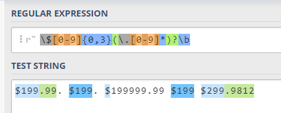

Regular Expression
Definition
Regular expression is a pattern-based method to find out specific symbols, strings or texts form objects. It can be ultilized to extract characters, replace object with a specific string, validate form, and so much more.
Tool
Website: Learn Re-gex this way
Python module: re
1 | import re |
Charpter 2.1.4 A More Complex Example :
A task in this charpter is that a user might want “any machine with at least 6 GHz and 500 GB of disk space for less than $1000”. In this case, our goal is to find out all 6 GHz processor speeds, prices $1000, and disk spaces 500 GB
In the Speech & language processing (Jurafsky D, 2000), the given regular expression pattern (RE pattern) is:
1 | r"(^|W)$[0-9]{0,3}(\.[0-9][0-9])?\b" |
This RE pattern is not perfect. It might match only dollar sign $ with big numbers, such as $ in $19999.

This RE pattern is supposed to be changed to:
1 | r"\$[0-9][0-9]{0,2}(\.[0-9]*)?\b" |

Question: How to find out disk spaces 500 GB and 6 GHz processor speeds together?
1 | # Import regular expression module |
1 | # Output |
2.1.6 Regular Expression Substitution:
Question: Changing the “35 boxes” to the “<35> boxes”.
Tool: re.sub(pattern, replacement, source)
1 | test = r"35 boxes" |
2.1.7 Lookahead assertions:
Question: Finding out any single word that does not start with Volcano.
The given regular expression pattern is
1 | r"^(?!Volcano)[A-Za-z]+" |
However, this pattern is sensitive to the first letter after ?!. In this case, our computer will check whether the testing string starts with V rather than Volcano. If not match, it returns true; if match, it returns false.
Suppose that the testing string is test = “Volcanowinds”. The recognized output is
1 | test = "VolcanoWinds" |
In this case, the pattern should be modified to
1 | pattern = r"(?<=Volcano)[A-Za-z]+" |
| Operator | Description | Return | Condition |
|---|---|---|---|
| ?= | positive lookahead | True | Pattern is matched |
| ?! | negative lookahead | True | Pattern is not matched |
| ?<= | positive lookbehind | True | Pattern is matched |